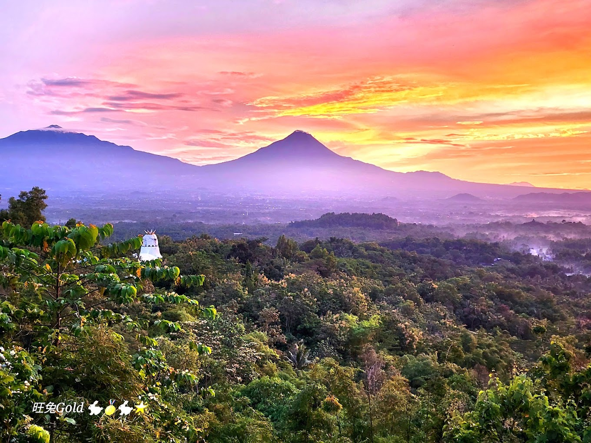
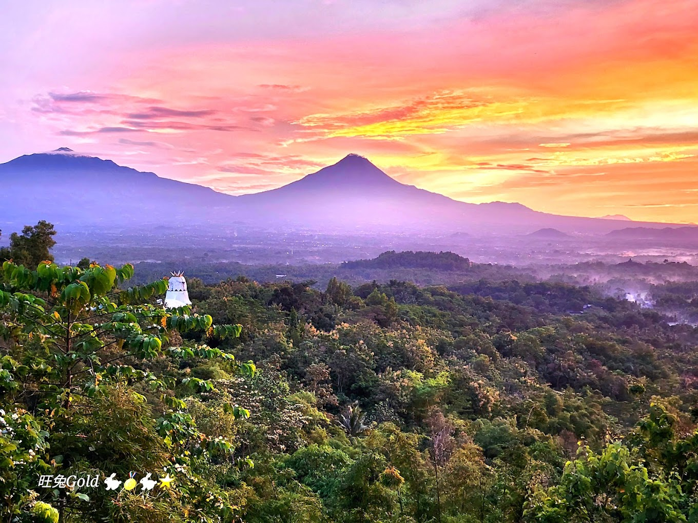

Wisata di Dusun Bumen Jelapan
Dan Sekitarnya
Wisata ATV & VW Classic
Jam Operasional: 08.00 - 17.00 WIB
Nikmati pengalaman seru berkeliling Kecamatan Borobudur dengan ATV atau VW klasik! Wisatawan akan diajak menjelajahi keindahan alam, mengunjungi UMKM lokal, destinasi wisata menarik, serta spot foto estetik yang Instagramable.
Dilengkapi dengan fasilitas lengkap seperti guide profesional, balon, flare, dan fotografer handal untuk mengabadikan momen terbaik Anda. Pilih paket perjalanan sesuai keinginan, mulai dari Short Trip (2 jam), Medium Trip (3 jam), Long Trip (4 jam), hingga One Day Trip (8 jam).
Punthuk Setumbu
Saksikan keindahan matahari terbit yang memukau dari puncak. Nikmati panorama Borobudur yang terselimuti kabut, menghadirkan ketenangan yang tak terlupakan.
Candi Borobudur
Siapa yang tidak mengenal Candi Borobudur? Mahakarya warisan dunia yang megah dan penuh makna. Rasakan ketenangan spiritual sambil menikmati keindahan relief dan panorama sekitarnya.
Bukit Barede
Nikmati keindahan matahari terbit dengan latar Borobudur yang menakjubkan. Tempat sempurna untuk merasakan ketenangan alam dari ketinggian.
 
